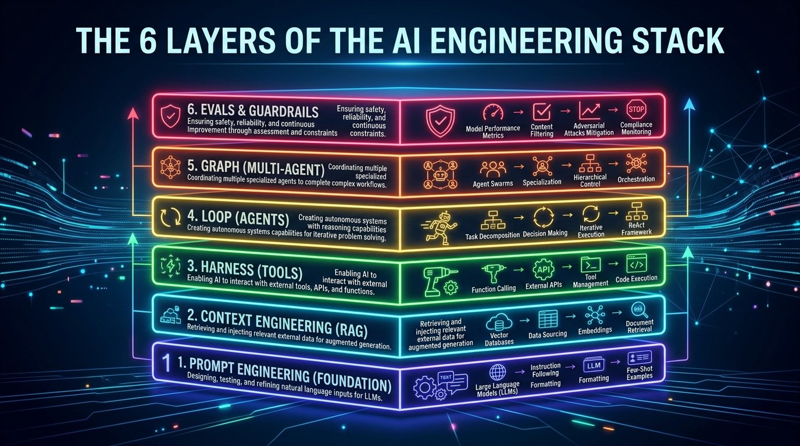
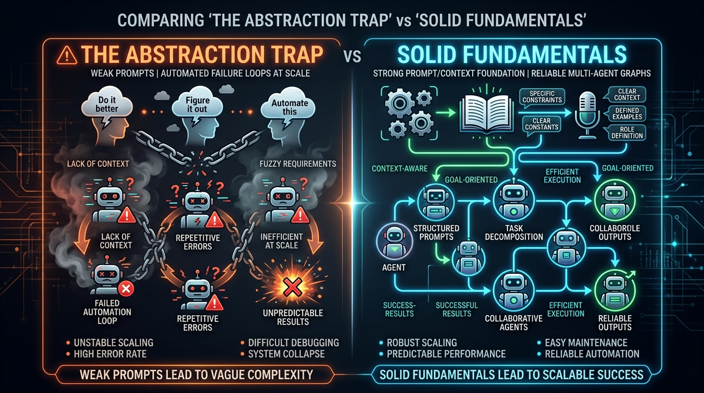

Prompt Engineering Isn't Dead. It's Evolving.
Every new AI buzzword is a new floor — not a demolition crew.

Every few months, the AI timeline declares something dead.
"Prompt engineering is dead."
"No, it's context engineering now."
"Actually, it's agent engineering."
"Wait — it's graph engineering."
I've watched this cycle repeat four times in a single year. And every time, people panic. They think everything they learned is suddenly outdated.
It's not.
Prompt engineering didn't die. It evolved. And understanding why will save you from chasing every new buzzword on your timeline.
So what is prompt engineering?
In plain English:
Prompt engineering is the skill of writing clear instructions for an AI — telling it what to do, how to think, and what format to use.
That's it. Every time you type something into ChatGPT, you're writing a prompt. When you get better at writing those instructions, you get better results.
That skill didn't go away. It became the foundation for everything that came after.
The building analogy

Think of AI engineering like constructing a building.
Prompt engineering is the foundation. It's the concrete slab everything else sits on.
When people started needing more from AI, they didn't tear up the foundation. They added floors:
- Needed the AI to know specific facts? Add context — a second floor.
- Needed the AI to use tools like calculators or search? Add tool use — a third floor.
- Needed the AI to retry and fix its own mistakes? Add agents — a fourth floor.
- Needed multiple AIs to work together? Add orchestration — a fifth floor.
Every floor depends on the one below it. Remove the foundation, and the whole building collapses.
That's why prompt engineering isn't dead. It's holding up the entire structure.
See the stack
Here's what those layers look like. Each one answers a bigger question:
🎯 Prompt → "How should I ask?"
📋 Context → "What should it know?"
🔧 Tools → "What can it do?"
🔄 Agents → "How does it improve?"
🕸️ Orchestration → "How do they work together?"| Layer | What it does | Plain English |
|---|---|---|
| Prompt | Gives instructions | "You are a helpful assistant. Answer in bullet points." |
| Context | Gives information | "Here's our company's refund policy." |
| Tools | Gives abilities | "You can search the web and run calculations." |
| Agents | Gives persistence | "If something fails, try a different approach." |
| Orchestration | Gives teamwork | "One AI researches, another writes, another reviews." |
Every single layer still starts with a prompt underneath. Always.
A quick example
Imagine you ask an AI:
"Summarize my company's revenue growth."
Just a prompt: The AI gives you a generic textbook answer. It's never seen your data.
Add context: You attach your Q3 financial report. Now it quotes your actual numbers.
Add a tool: It uses a calculator for precise percentage growth instead of guessing the math.
Add an agent: The calculator hits an error. The AI reads the error, fixes its approach, and retries — without you lifting a finger.
Same question. Each layer made the answer more useful. And every single layer ran on a prompt underneath.
💡 Why people think it's dead
The AI world has a habit of renaming things and calling it a revolution.
Context engineering, agent engineering, graph engineering — these are real concepts. But they're not replacements. They're additions.
The confusion comes from social media, where nuance doesn't get engagement. "Prompt engineering is dead" gets clicks. "Prompt engineering is now one layer in a larger system" doesn't.
Don't fall for it.
Why this matters

Here's the trap I see teams fall into all the time.
They skip the basics — vague prompts, messy context — and jump straight to building complex agent systems. Then they wonder why nothing works.
A vague prompt wrapped in a fancy framework doesn't become precise. It just fails faster and costs more.
The teams building the best AI products right now? They're obsessive about getting the foundations right first. Clear instructions. Relevant context. Simple before complex.
Fundamentals compound. Shortcuts don't.
The takeaway
Nothing in AI engineering is dead. The stack just got taller.
Prompt engineering is the foundation. Everything else is built on top of it.
Learn the fundamentals, and every new trend becomes something you can use — not something that confuses you.
❓ Think about it
What's one AI buzzword that's felt confusing or overhyped to you recently?
Let me know — and I'll break it down from first principles in an upcoming issue! 🧠
Discussion
2 thoughtsUnderstand systems,
not trends.
Join engineers and builders who want first-principles clarity on AI. Free, forever.
No spam. Unsubscribe anytime.
The distinction between prompt engineering as an instruction layer vs graph engineering as coordination is the clearest mental model I've read this year.
The building analogy nailed it. Building multi-agent reflection loops on bad prompts is literally just automating token burn.